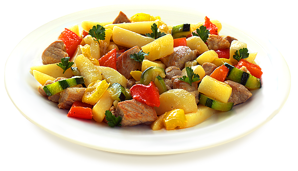

Новогодние рецепты 2015

Вторые блюда

Ингредиенты:
Ингредиенты:
| 400 г |
мякоти свинины (шея) |
| 2 |
свежих помидора |
| 100 г |
сыра |
| 1 ст. л. |
горчицы |
|
соль по вкусу |
|
перец по вкусу |
Приготовление:
- Мясо хорошо промыть и обсушить.
- Нарезать порционными ломтиками.
- Посолить и поперчить каждый ломтик мяса.
- Выложить в форму для запекания и смазать горчицей.
- Сверху уложить ломтиками нарезанные помидоры.
- Посыпать тертым сыром. Накрыть фольгой и запекать в духовке 1 час при температуре 200 градусов С.
- В конце готовки снять фольгу и немного запечь сверху, 5-7 минут.
- Выложить блюдо с листьями салата и овощами.